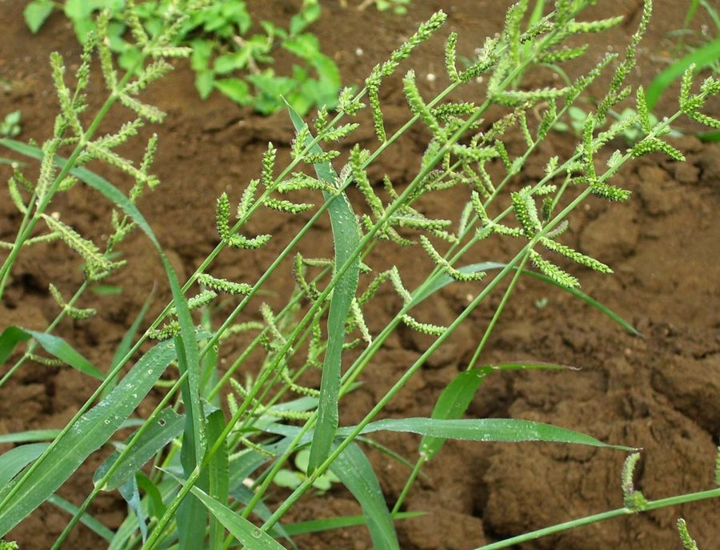

सावाँJungle Rice
Echinochloa colona · Poaceae · FLR-0139

- Scientific name
- Echinochloa colona (L.) Link
- Family
- Poaceae
- Hindi
- सावाँ
- Local names
- sawan, sanwa, sanwak, jungli sawan, barnyard grass
- Status here
- native
- Movement
- Resident, here all year
- IUCN
- not evaluated
- Review
- audited and independently read
When to look कब देखें
Present all year.
Uses and possibilities उपयोग और संभावनाएँ
Drawn from the documented uses in the profile below, where each is labelled traditional, current or a research lead. All uses →
सावाँ / Jungle Rice
Echinochloa colona (L.) Link — Poaceae
सावाँ — एक छोटी, उबड़-खाबड़ फलियों वाली घास जो पानी वाले खेतों में, तालाब के किनारों पर, और सड़कों के किनारे उगती है। तने सीधे, एक-डेढ़ मीटर तक। पत्तियाँ चौड़ी-चपटी, हल्की हरी। बरसात में बीज बोते हैं, तो तीन-चार महीने में दाने तैयार हो जाते हैं। इसकी फली (स्पाइकलेट) में काँटे होते हैं जो कपड़े पर चिपक जाते हैं। दाना छोटा, पर खाने योग्य, और पशु-चारण में भी अच्छा।
Quick Identification त्वरित पहचान
| Feature | Description |
|---|---|
| Height | 0.5–1.5 m, erect, tufted |
| Stems | Soft, hollow, slightly hairy, greenish, multiple tillers |
| Leaves | Linear to lanceolate, 10–30 cm long, 0.5–1.2 cm wide, hairy on both surfaces |
| Inflorescence | A branched panicle (spike-like), 8–15 cm, with side spikes bearing spiny spikelets |
| Spikelets | Ovoid, 3–4 mm, with backward-pointing spines or bristles that cling to fur and cloth |
| Grain | Small, 2–3 mm, oval, brown or reddish when ripe |
Field tip: A medium-sized grass with hairy leaves, appearing in wet places and paddy margins. The distinctive inflorescence has spiky spikelets that stick to clothing. The grain is very small compared to rice, but similar in structure.
Morphology आकारिकी
Biometrics (typical measurements for the Gangetic plain):
| Measurement | Range |
|---|---|
| Plant height | 0.5–1.5 m |
| Leaf length | 10–30 cm |
| Leaf width | 0.5–1.2 cm |
| Panicle length | 8–15 cm |
| Spikelet length | 3–4 mm |
| Grain length | 2–3 mm |
Root system: Fibrous roots arising from tillers; not deep-rooting like Oryza sativa (rice), but adequate for moisture-rich soils.
Stems (culms): Soft, hollow, slightly flattened, with visible nodes. Multiple tillers arise from the base, forming a tufted plant.
Leaves: Linear to lanceolate, with a fine but visible midrib. Both surfaces are hairy (hirsute), which is a diagnostic feature distinguishing it from smooth-leaved rice. Sheaths clasp the stem and are hairless or nearly so.
Inflorescence: A branched panicle with multiple lateral branches. The spikelets are spirally arranged. Each spikelet has backward-pointing spines or bristles (awns) that readily attach to fur, wool, and cotton cloth — an adaptation for seed dispersal by animals.
Grain (caryopsis): Small, oval, brown to reddish-brown when mature. The palea (inner chaffy covering) adheres tightly and does not separate as easily as in cultivated rice. Germination is rapid in moist soil.
हिंदी: तना कोमल, खोखला। पत्तियाँ बालों वाली, चौड़ी। फली काँटेदार, कपड़े पर चिपकने वाली।
Behaviour & Ecology व्यवहार और पारिस्थितिकी
A rapid-growing annual grass of tropical wetlands, native to Asia. Echinochloa colona is a pioneer colonizer of wet, disturbed ground — fallows, rice margins, and canal banks. It germinates readily in moist soil and grows quickly, reaching maturity in 3–4 months under monsoon conditions. It is highly adaptable, tolerating both temporary flooding and periodic dry-downs, making it ideal for marginal wetland habitats.
The grain is small but nutritious and was historically eaten across Asia. Today it is more commonly left as forage. The spiny spikelets are a vector for seed dispersal; they readily attach to animal fur and human clothing, traveling long distances.
The plant provides cover for water birds and invertebrates. In paddy fields, it can become weedy if left uncontrolled, competing with rice for water and nutrients.
हिंदी: यह घास गीली जगहों पर जल्दी उगती है। बरसात में पानी में भी बढ़ती है। पत्तियाँ कोमल, चारे के लिए अच्छी। दाना छोटा पर खाने योग्य।
Life Cycle / Phenology जीवन चक्र
Echinochloa colona is an annual grass — it completes its life cycle within a single growing season.
| Month | State | हिंदी |
|---|---|---|
| May–Jun | Sowing in nurseries or direct seeding in wet beds | बीज बोना |
| Jul–Aug | Germination and vegetative growth; tiller production | तेज़ बढ़ैती |
| Aug–Sep | Panicle initiation; flowering | फूल और बीज बनना |
| Sep–Nov | Grain ripening and maturation; harvest-ready | दाना पकना |
| Dec onwards | Dried stalks remain; new sowing next season | सूखे तने |
Growth cycle: Approximately 90–120 days from sowing to harvest-ready grain, depending on temperature and moisture. Early sowings (June) mature by October; later sowings by December.
Harvesting: Traditionally harvested in November–December when grain has hardened. The whole panicle is cut, dried in the sun for a few days, and then threshed by beating to separate grain from chaff.
हिंदी: जून-जुलाई में बीज, अगस्त में फूल, सितंबर-नवंबर में दाना। तीन-चार महीने में तैयार।
Associated Species / Interactions संबंधित प्रजातियाँ
- Paddy weed: Often appears as a weed in rice paddies, competing with the main crop.
- Water bird habitat: Provides cover for waterfowl and wading birds in wet areas.
- Livestock forage: Grazed by cattle and buffalo when tender.
Pests and Diseases कीट और रोग
- Generally hardy: Few serious pests recorded.
- Mold and mildew: Can develop in excessively wet conditions.
- Stem borers: Occasionally attacked by lepidopteran larvae.
Agricultural / Human Relevance कृषि और मानव संबंध
Food grain. The grain of sawan is small, but nutritious and palatable. It has been eaten across Asia for millennia as a minor cereal, either as a cooked whole grain or ground into flour. In India, it is known as barnyard rice or sanwa, and in some regions is specially cultivated as a monsoon crop. The grain cooks similarly to rice, though faster due to its smaller size.
Traditional and ethnic use. In eastern India and Nepal, sawan is a traditional crop, particularly in upland areas and monsoon-prone regions. In some communities, it is prepared as a festival or ceremonial dish.
Livestock forage. The green plants are grazed or harvested as fodder. The quality is reasonable, though not as high as dedicated fodder grasses like Munja Grass.
Grazing management. The plant's presence in a paddy field or pasture indicates wet, disturbed conditions. It is neither a weed nor a valued crop in most modern agricultural systems, but rather a semi-wild plant that appears when conditions allow.
Research direction (a lead, not a result). Echinochloa species are being investigated for their drought-tolerant and flood-tolerant characteristics, and for potential use in climate-stressed agriculture, particularly in monsoon-prone regions.
हिंदी: सावाँ का दाना छोटा पर अच्छा खाना है। कुछ जगहों पर इसे खास फसल मानते हैं। पशु भी इसे चरते हैं।
Expected Locally स्थानीय रूप से अपेक्षित
Not a field record. Written from published accounts for eastern Uttar Pradesh. No confirmed local sighting yet — if you have seen it, that is what the atlas needs.
अभी तक स्थानीय पुष्टि नहीं। यह विवरण प्रकाशित स्रोतों से है, किसी अवलोकन से नहीं।
Expected in rice paddies, paddy margins, and wet wasteground throughout Basti district. The plant appears as a summer annual following the monsoon. Local knowledge of its culinary and medicinal uses, and its role in traditional agriculture, would be valuable to record.
Distribution वितरण
Global range: Native to tropical Asia; now distributed throughout tropical and subtropical regions globally.
In India: Found throughout the Indo-Gangetic plains and the coastal regions, particularly in rice-growing areas.
In Uttar Pradesh: Widespread in paddy fields and wet areas throughout the state.
In Basti district / eastern UP: Abundant in rice paddies and wet wasteground throughout the district, especially after the monsoon.
Research Questions शोध प्रश्न
Anyone can investigate these | कोई भी इन प्रश्नों की जाँच कर सकता है
- Where does sawan grow near your village? / आपके गाँव के पास सावाँ कहाँ उगता है? — Record locations: paddy margins, wet fallows, or cultivated patches.
- Do people in your community eat sawan grain? — Interview elders about traditional preparation and use; document any recipes.
- How long does it take from sowing to harvest-ready grain? — Sow seeds and count days to maturity.
- Which birds or animals feed on sawan? — Observe a growing patch during harvest season; record what eats the grain.
- Can you cook sawan as you would cook rice? — Harvest grain, thresh, cook, and compare taste and texture to rice. / क्या आप सावाँ को धान की तरह पका सकते हैं?
Similar Species मिलती-जुलती प्रजातियाँ
| Species | How to tell apart | हिंदी |
|---|---|---|
| Paddy (Oryza sativa) | Larger plant (1–2 m); smoother leaves; spikelets arranged in an open branched panicle; grain 6–8 mm | धान — बड़ा पौधा; बड़ा दाना |
| Echinochloa stagnina (Flood rice, Varai) | Larger spikelets and grain; grows in deeper water | वराई — बड़े दाने, गहरे पानी में |
| Paspalum distichum (Water paspalum) | Two-ranked spikes; smaller plant; smooth leaves; grows in very wet areas | पास्पालम — पंक्तियों में फूल |
Field rule: A hairy-leaved, medium-sized grass in wet places, with small spiky spikelets that cling to cloth, and grain 2–3 mm, maturing in 90–120 days = Echinochloa colona (jungle rice).
Taxonomy & Classification वर्गीकरण
Original description. Originally described by Linnaeus as Panicum colona and transferred to Echinochloa by Link. The genus Echinochloa contains about 20 species of wet-habitat grasses.
Subspecies. Monotypic — no subspecies are currently recognised.
Family and order placement. Poaceae, subfamily Panicoideae, tribe Paniceae. The genus is closely related to Setaria (bristle grasses) and Paspalum.
Phylogenetic notes. Echinochloa colona belongs to a clade of Old World tropical wetland grasses with spiny spikelets adapted to animal dispersal.
IUCN status rationale. Not evaluated. Widespread with no conservation concerns; locally abundant in suitable habitats.
Photo Gallery फोटो गैलरी
Photos needed आवश्यक फोटो
- [ ] Whole plant in a wet paddy or field margin
- [ ] Inflorescence showing the spiky spikelets
- [ ] Mature grain harvested and threshed
References संदर्भ
- Link, J.H.F. (1833). Hortus Regius Berolinensis, vol. 1. Berlin.
- Hooker, J.D. (1897). Flora of British India, vol. 7. L. Reeve & Co., London.
- Bor, N.L. (1960). The Grasses of Burma, Ceylon, India and Pakistan. Pergamon Press.
- Singh, K.P. & Kushwaha, C.P. (2005). Diversity of Flowering Phenology of Trees in a Tropical Deciduous Forest in India. Current Science, 89(12): 1901–1905.
- Botanical Survey of India — Flora of Uttar Pradesh (2012).
- GBIF Occurrence Data — Echinochloa colona, India (2015–2026).
Source file: species/flora/grasses/sawan_grass.md